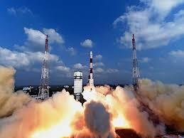

ISRO MAKES HISTORY, LAUNCHES RECORD 104 SATELLITES : PM NARENDRA MODI CONGRATULATES SCIENTISTS

The Indian Space Research Organisation (ISRO) etched its name in history books today as it launched a record 104 satellites on board a single rocket from the Satish Dhawan Space Centre in Sriharikota, Andhra Pradesh.
"The countdown for the launch of PSLV-C37/Cartosat2 Series satellite mission began at 5:28 AM soon after the Mission Readiness Review committee and Launch Authorisation Board gave its approval for lift off," Indian Space Research Organisation (ISRO) said.
ISRO scientists have used the XL Variant -- the most powerful rocket -- earlier used in the ambitious Chandrayaan and during the Mars Orbiter Mission (MOM).
Two other Indian nano satellites, weighing about 1,378 kg, combined, have also been launched.
The primary objective of INS (ISRO Nano Satellite) is to provide an opportunity for ISRO technology demonstration payloads, provide a standard bus for launch on demand services.
The launch is the first one to ever have 104 satellites aboard. The only other rocket to have successfully launched with maximum satellites before today was the one by Russian Space Agency with 37 satellites.
It is ISRO's second successful attempt after launching 23 satellites in one go in June 2015.
— With PTI inputs
The feat has attracted the attention of top leaders from the country, including Prime Minister Narendra Modi.
Connect With Us
- Home
- News
- Sports
- Weather
- Shop
- Earth
- Travel
- Capital
- Make it Digital
- Autos
- iWonder
- TV
- Radio
- CBBC
- Culture
- Food
- Future
- BiteSize
- Music
- Arts
- CBeebies
- Taster
- Nature
- Local
Copyright © 2017 InsatNews. The InsatNews is not responsible for the content of external sites. Read about our approach to external linking.